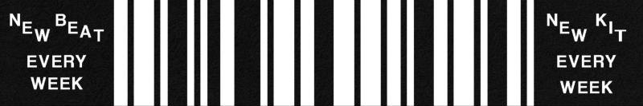
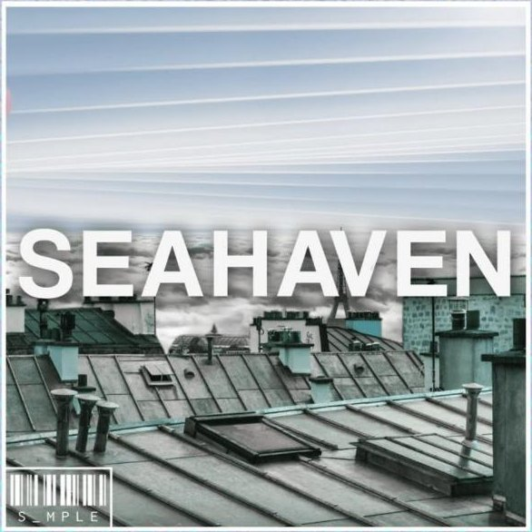
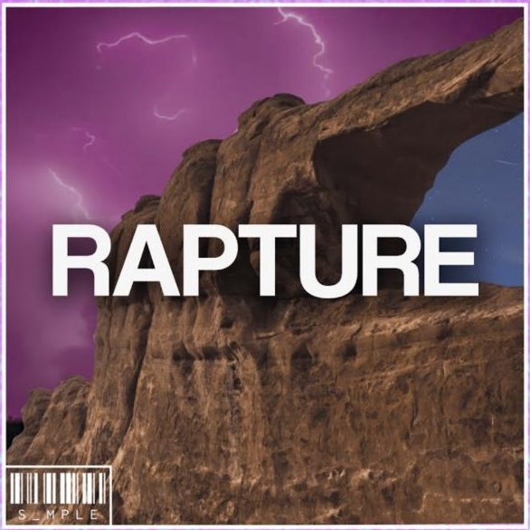
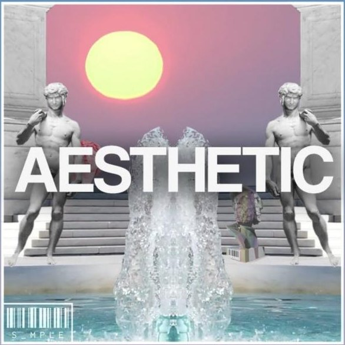
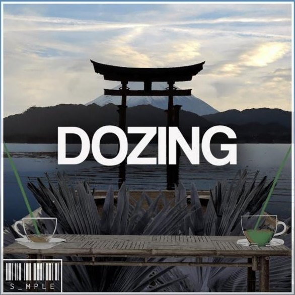
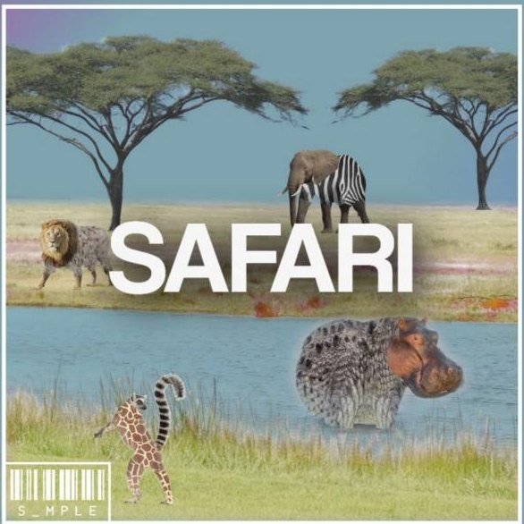
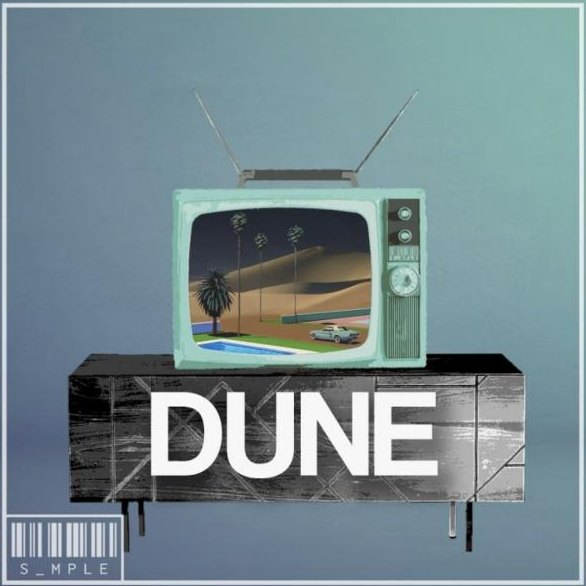
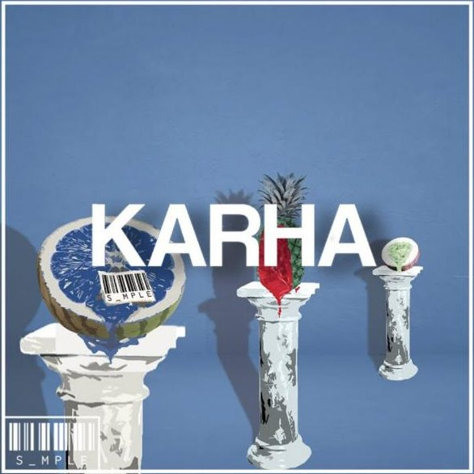
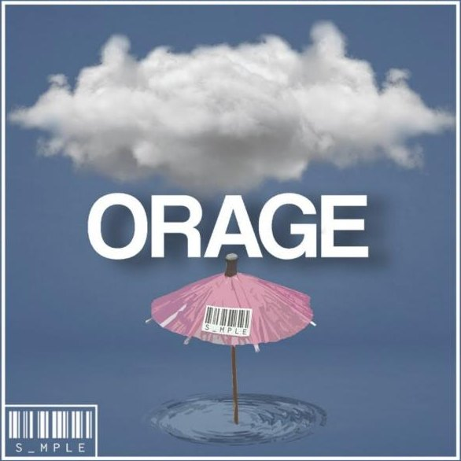

S_MPLE
Projet collectif · 2021–2022

Avec quatre autres producteurs, S_MPLE a publié chaque semaine un type beat et ses multipistes, en téléchargement gratuit : vingt-cinq beats et une compilation sur YouTube. Le projet avait sa propre communication sur Instagram, et chaque beat sa pochette, sur un modèle commun.
- Composition
- Production
- Direction artistique
Mon rôle
Composition d’une bonne partie des morceaux. Création de l’ensemble des univers visuels de la chaîne YouTube.
Les pochettes

Seahaven
Rapture
Aesthetic
Dozing
Safari
Dune
Karha
Orage
Toute la chaîne YouTube · Instagram
Avec
Alexandre Teneze, Dole Panada, Seventh Valley et Thomas Dechaud-Fauchet